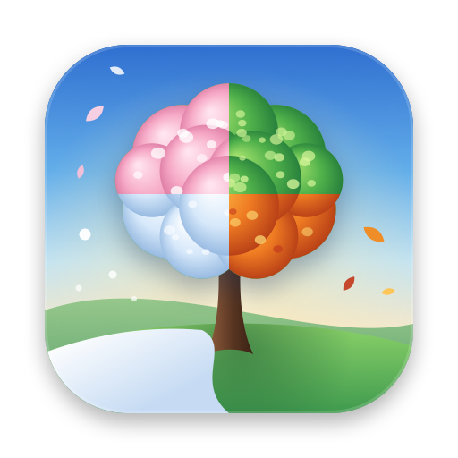

Seasonfall
All four seasons on your Mac desktop.
Snow in winter, blossom in spring, drifting seeds in summer and falling leaves in autumn, over living landscapes with birds, geese and smoke rising from the chimneys. Seasonfall has no accounts, no network access and no tracking.
Getting started
- Open Seasonfall. It has no Dock icon; look for the season’s symbol in the menu bar.
- Click the symbol for the controls: choose a season (or Automatic), a landscape, the weather and the decorations.
- Right-click the symbol for a short menu, or press ⌃⌥⌘W to turn everything off and on.
- Choose Move Trees and Decorations… to drag the trees and decorations where you want them. Press Done when you are finished.
Questions
Which season does Automatic show?
The one the calendar says, from your Mac’s date and time zone. Winter begins in the middle of November. You can always pick a season yourself.
Can I still click my desktop and windows?
Yes. Everything is drawn in transparent windows that ignore the mouse and keyboard and never take focus. The only exception is Move Trees and Decorations mode, which you start and end yourself.
Does it change my wallpaper?
No. An optional landscape is drawn behind your icons. Your real wallpaper is never touched.
Does it slow my Mac down?
Seasonfall eases off by itself on battery, in Low Power Mode and when the Mac runs warm, and it stops drawing when nothing can be seen. Under Settings › Performance you can set the quality and the frame rate.
Which languages?
Fifteen, including English and Swedish. The app follows your Mac’s language.
Contact
Ask a question or report a problem at github.com/Messijah/frostfall/issues (you need a GitHub account). Please say that it is about Seasonfall, which Mac and macOS version you use and what happened.
Everything written there is public, so do not include personal details or screenshots of your windows.
Seasonfall
Alla fyra årstider på skrivbordet.
Snö på vintern, blommor på våren, frön som svävar på sommaren och löv som faller på hösten, över levande landskap med fåglar, gäss och rök ur skorstenarna. Seasonfall har inga konton, ingen nätverksåtkomst och ingen spårning.
Kom igång
- Öppna Seasonfall. Appen har ingen Dock-ikon; leta efter årstidens symbol i menyraden.
- Klicka på symbolen för reglagen: välj årstid (eller Automatisk), landskap, väder och dekorationer.
- Högerklicka på symbolen för en kort meny, eller tryck ⌃⌥⌘W för att stänga av och slå på allt.
- Välj Flytta träd och dekorationer … för att dra träden och dekorationerna dit du vill ha dem. Tryck på Klar när du är färdig.
Frågor
Vilken årstid visar Automatisk?
Den som kalendern säger, utifrån datorns datum och tidszon. Vintern börjar i mitten av november. Du kan alltid välja årstid själv.
Kan jag fortfarande klicka på skrivbordet och fönstren?
Ja. Allt ritas i genomskinliga fönster som ignorerar mus och tangentbord och aldrig tar fokus. Enda undantaget är läget Flytta träd och dekorationer, som du själv startar och avslutar.
Ändras min bakgrundsbild?
Nej. Ett valfritt landskap ritas bakom dina ikoner. Din riktiga bakgrundsbild rörs aldrig.
Gör den datorn långsammare?
Seasonfall drar ner av sig självt på batteri, i lågenergiläge och när datorn blir varm, och slutar rita när inget syns. Under Inställningar › Prestanda kan du välja kvalitet och bildfrekvens.
Vilka språk?
Femton, bland dem svenska och engelska. Appen följer datorns språk.
Kontakt
Ställ en fråga eller rapportera ett fel på github.com/Messijah/frostfall/issues (du behöver ett GitHub-konto). Skriv att det gäller Seasonfall, vilken Mac och macOS-version du använder och vad som hände.
Allt som skrivs där syns för alla, så skriv inga personuppgifter och lägg inte upp skärmbilder av dina fönster.